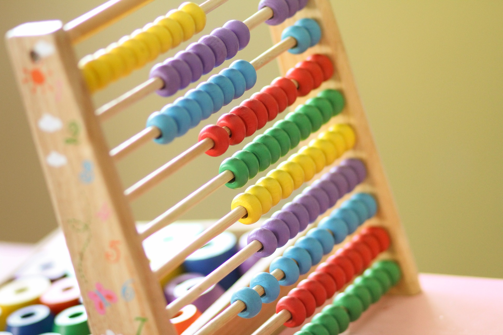

Licenca
To delo je na voljo pod pogoji slovenske licence Creative Commons 2.5:
priznanje avtorstva - nekomercialno - deljenje pod enakimi pogoji.
Celotna licenca je na voljo na spletu na naslovu http://creativecommons.org/licenses/by-nc-sa/2.5/si/. V skladu s to licenco je dovoljeno vsakemu uporabniku delo razmnoževati, distribuirati, javno priobčevati, dajati v najem in tudi predelovati, vendar samo v nekomercialne namene in ob pogoju, da navede avtorja oziroma avtorje in izdajatelja tega dela. Če uporabnik delo predela, kar pomeni, da ga spremeni, preoblikuje, prevede ali uporabi to delo v svojem delu, lahko predelavo dela ponudi na voljo le pod pogoji, ki so enaki pogojem iz te licence oziroma pod enako licenco.

Dvojiški komplement lahko uporabimo tudi za odštevanje. Če želimo od pozitivnega števila odšteti drugo pozitivno število, je to tako, kot da bi najprej pretvorili število, ki ga želimo odšteti, v negativno število. Nato pa bi pozitivno in negativno število sešteli. To deluje enako, kot v desetiškem sistemu. Na primer, če želimo izračunati 5 - 2 = 3, je to enako, kot če bi izračunali 5 + (-2) = 3.
Ta lastnost števil, predstavljenih z dvojiškim komplementom, je zelo koristna. Omogoča nam, da ima lahko računalnik samo eno vezje, ki lahko obdeluje tako pozitivna, kot negativna števila ter da lahko seštevanje in odštevanje obravnavamo kot enaki operaciji.
Za radovedne
Zamisel o uporabi komplementarne (lat. complementus) oziroma »dopolnilne« številke, ki omogoča, da odštevanje spremenimo v seštevanje, je mogoče najti tudi v desetiškem številskem sistemu. V desetiškem sistemu je komplementarna številka dane številke tista, ki se z dano številko sešteje v 10. Na primer, komplementarna številka številke 4 je 6 in komplementarna številka številke 8 je 2. Beseda »komplement« izhaja iz latinske besede completus, kar pomeni popolno – se pravi, da dano število dopolni do »popolnega« števila.
Odštevanje 2 od 6 je enako kot prištevanje komplementarne številke in ignoriranje 1 številke na levi strani. Komplement številke 2 je 8, torej, če številki 6 prištejemo 8, dobimo (1)4.
Za večja števila (npr. odštevanje dveh 3-mestnih številk 255 - 128) je komplementarno število tisto, ki »manjka« do naslednje potence števila 10, tj. 1000 - 128 = 872. Preveri, da prištevanje števila 872 k številu 255 da (skoraj) isti rezultat kot odštevanje števila 128.
Delo s komplementarnimi števili v dvojiški obliki je še lažje, saj uporabljamo le dve števki. Če celoten postopek razčlenimo v destiški obliki, nam to pomaga razumeti, kaj se pravzaprav dogaja.
Bit za predznak ali dvojiški komplement
Ogledali smo si dva različna načina predstavitve negativnih številk na računalniku. V praksi se predstavitev z bitom za predznak uporablja redko, saj ima dve različni predstavitvi števila nič (+0 in -0) in zahteva drugačno računalniško vezje za ravnanje z negativnimi in pozitivnimi številkami ter za seštevanje in odštevanje.
Predstavitev negativnih števil z dvojiškim komplementom se uporablja pogosto, saj ima samo eno predstavitev števila nič in omogoča, da se pozitivne in negativna številke obravnavajo na enak način, seštevanje in odštevanje pa se obravnavata kot ena operacija.
Obstajajo tudi drugi sistemi za predstavitev negativnih števil, kot sta »eniški kompement« in »predstavitev z odmikom«, toda dvojiški komplement je daleč najbolj uporabljena predstavitev negativnih števil v praksi.
